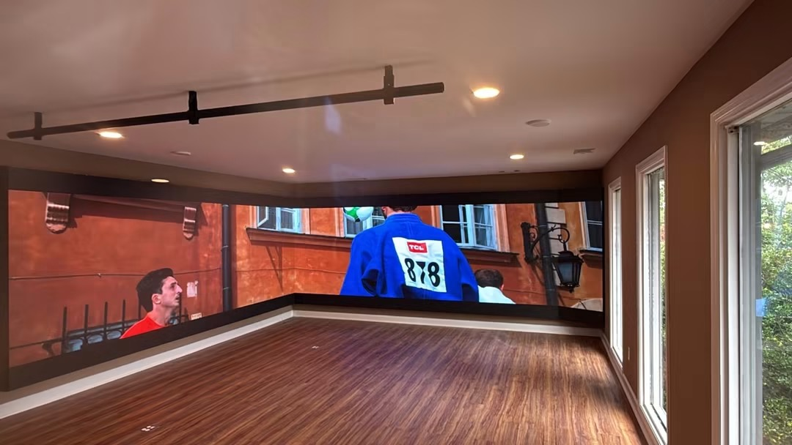
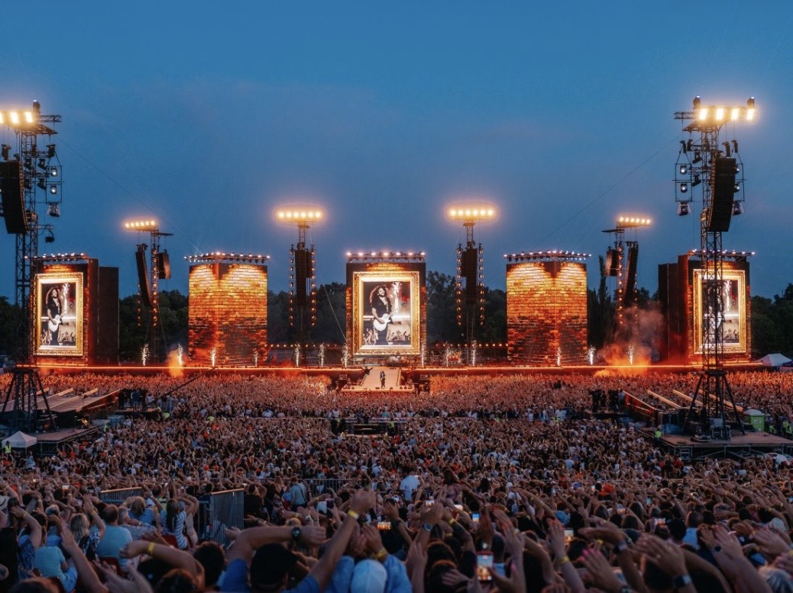

By David
What is LED display burn-in? LED display burn-in is uneven aging that leaves a faint ghost of static content on the screen. It happens when some LEDs run brighter or hotter than others for long periods, so they dim faster and the image stays imprinted. This 2026 guide explains the causes, which content is risky, and how buyers can prevent image retention before it appears.
Burn in on an LED screen is not the same as burn in on an old plasma television, but the result looks similar: a shadow of a logo, ticker, or dashboard that will not disappear. It develops slowly, over months or years, and by the time it is visible the uneven aging is permanent. Prevention is the only real cure.
This guide is written for buyers specifying retail, transport, control room, and signage screens, where static content is common and burn in risk is highest. It covers the causes of image retention and the practical measures that keep a screen uniform for years.
Every LED ages with use, and the aging depends on how much current it carries and how hot it runs. When one part of the screen always shows bright content it ages faster than the parts showing dark content. The difference in aging becomes visible as a ghost of the static image.
The effect is strongest with bright, static, high-contrast elements that never move, such as a logo, a channel bug, a scoreboard panel, or a fixed dashboard. Blue LEDs often age faster than red or green, so a bright blue element can leave a more visible ghost.
Static content holds the same pixels at the same brightness for hours. Over time those pixels age relative to their neighbors. The risk grows with brightness, with the duration of the static element, and with the contrast between the element and its background.
| Content Type | Burn-in Risk | Why |
|---|---|---|
| Full-screen video | Low | Brightness moves across the screen |
| Static logo on video | High | Bright element held in one place |
| Fixed dashboard | Medium | Bright regions held in place |
| Fully static poster | Very high | Whole screen fixed for hours |
| Scrolling ticker | Low to medium | Moves, but a bright band remains |
A screen showing full-screen video almost never burns in, because every pixel sees a mix of bright and dark content. A screen showing the same logo on the same background for years is the classic case, and it appears most often in retail and transport displays.
Brightness drives current, and current drives both brightness and heat. Running a screen at full brightness accelerates the aging of the busiest pixels. Reducing brightness to the lowest level that still reads clearly in the room slows the aging across the whole screen and reduces the gap between busy and idle pixels.
Pixel shift moves the whole image by a few pixels on a slow cycle, so no single pixel stays lit by the same content. Over hours the shift is invisible to viewers but spreads the load across neighboring pixels. Many LED controllers support pixel shift as a standard setting.
A screen saver is the simplest prevention of all. Dimming or turning off an LED screen during closed hours removes hours of unnecessary aging from the busiest pixels every single day. For a venue open eight hours a day, that can nearly double the useful life of the screen.
Early burn in is hard to see on normal content because the eye adapts to the screen. A solid grey or white test image reveals it clearly, because the uneven aging shows as a faint dark or light patch. Testing with a solid field is the standard way to catch it early.
Schedule a periodic uniform-field test as part of maintenance. When a ghost first appears, increase pixel shift, rotate content, and re-calibrate to slow the effect. Once it is strong, no calibration fully removes it, so catching it early is the whole game.
The cheapest prevention happens at the content design stage. Move a logo slightly, change its brightness, or alternate between two corner positions on a slow cycle. Avoid bright white or blue elements held in one place against a dark background, which is the worst combination for aging differences.
For control room and transport screens that must show fixed layouts, build rotation into the layout itself. Shift the data panels or the header position on a schedule so no pixel carries the same load for months. A little motion in the layout protects the screen without affecting the operator.
Brightness is the single easiest lever against burn in. A screen running at 100 percent brightness ages its busiest pixels far faster than one running at 60 percent. In most indoor environments, a lower brightness also looks better, because it reduces glare and keeps the black level deep. The eye rarely notices a modest reduction, but the LEDs do.
Pair lower brightness with a scheduled dimming plan. Dim the screen in the evening, and turn it off entirely when the venue is closed. Those dark hours remove aging from the pixels that would otherwise carry the heaviest load. Over a year, this can add years to the life of the screen.
Blue LEDs tend to age faster than red and green, so a bright blue element held in one place leaves a more visible ghost. A blue logo on a dark background, common in retail and broadcast, combines the fastest-aging color with the highest contrast, which is the worst combination for image retention.
Designers rarely think about LED aging when they lay out a screen, but the color and position of a static element decide how fast it burns in. A short conversation between the content team and the screen team at the design stage prevents the most common and most permanent form of image retention.
Once burn in appears, the goal shifts from prevention to slowing it. Re-calibrating the wall can hide a mild ghost by lifting the dimmer pixels to match, at the cost of a slightly lower overall brightness. Rotating content and enabling pixel shift slow further aging. These steps buy time but do not erase the pattern.
If the ghost is already strong, replacement of the affected modules is the only full cure. This is expensive, which is why prevention and early detection matter so much. A modest investment in pixel shift and content rotation at the start is far cheaper than replacing modules later.
| Prevention Measure | Effort | Effectiveness |
|---|---|---|
| Turn off or dim when closed | Very low | High, removes hours of aging daily |
| Lower overall brightness | Low | High, slows aging of busy pixels |
| Enable pixel shift | Low | High for static elements |
| Rotate logos and layouts | Low to medium | High, spreads the load |
| Periodic re-calibration | Medium | Medium, hides mild early ghosts |
| Replace affected modules | High cost | Only full cure once ghost is strong |
The cheap measures at the top of this list do most of the work. A team that dims the screen when closed, lowers brightness, enables pixel shift, and rotates content will rarely see burn in at all. The expensive measure at the bottom is the consequence of skipping the cheap ones.
Ask the supplier and the controller vendor whether the system supports pixel shift, scheduled dimming, and periodic uniform-field testing. These are controller features, not LED features, and they cost little to enable. A screen without them relies entirely on careful content, which rarely survives a busy operations team.
Add a line to the maintenance plan that requires a uniform-field inspection at set intervals. Documenting the test turns burn-in prevention from a hope into a routine, and it gives the buyer evidence if uneven aging appears during the warranty period.
LED display burn in is a slow, permanent form of uneven aging, but it is largely preventable. Move the bright elements, lower the brightness, dim when idle, and use pixel shift. Buyers who plan for image retention at the design stage rarely see it on screen.

For this requirement our range covers it directly: the COB Z rental series (7680Hz flip-chip) and the COB ZH touring series (sealed, wind-rated).
Tell us your content plan, and we will configure pixel shift and dimming to prevent image retention.
Request Burn-in PlanChat on WhatsApp